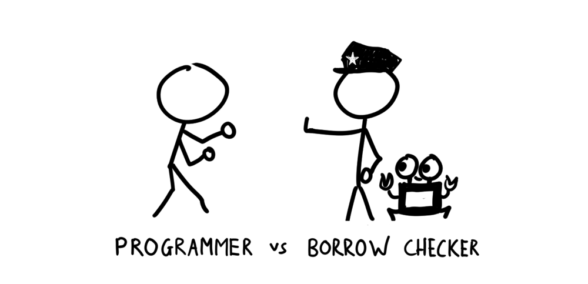
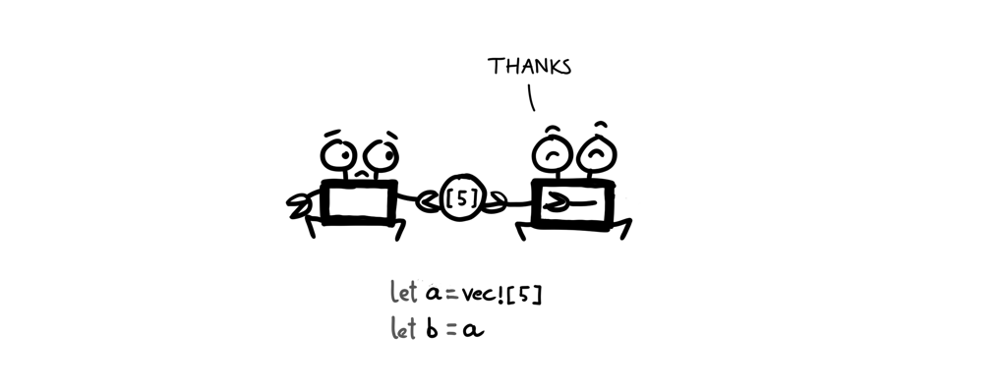
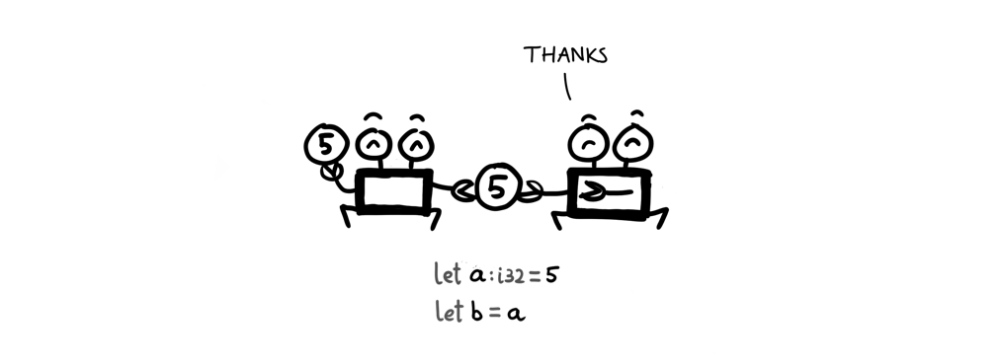
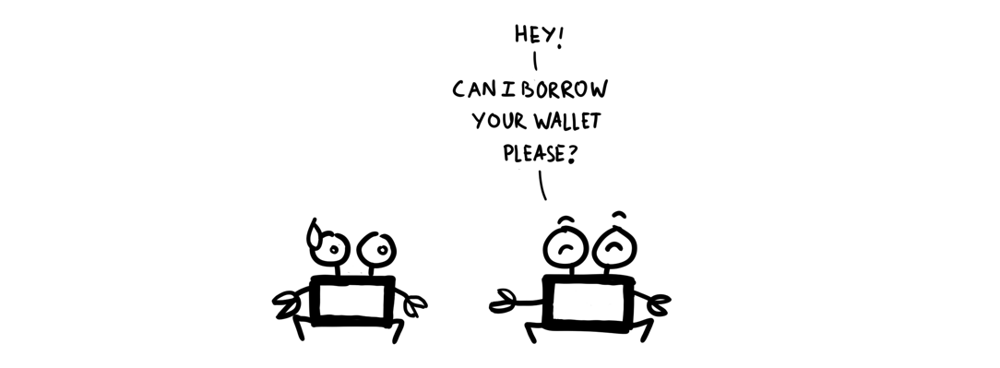
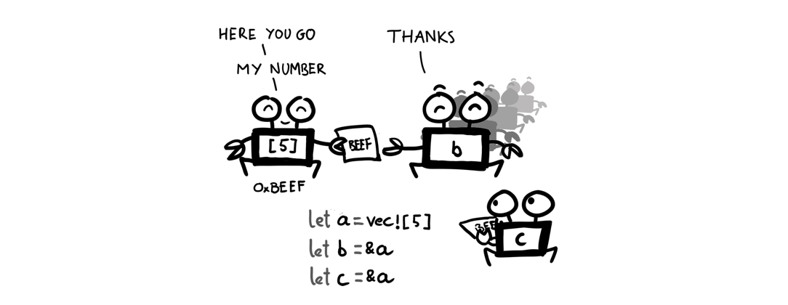
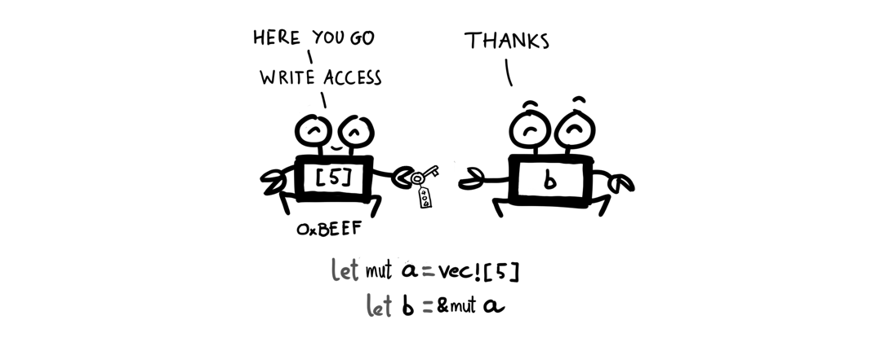

Một trong những cơn ác mộng của lập trình viên khi làm việc với Rust đó là chuyện đập nhau với borrow checker, ví dụ như những lúc bị compiler chửi vào mặt như thế này.
fn main() {
let a = vec![5];
let b = a;
println!("{:?}", a);
}
error[E0382]: use of moved value: `a`
--> borrowchecker.rs:4:22
|
3 | let b = a;
| - value moved here
4 | println!("{:?}", a);
| ^ value used here after move
|
= note: move occurs because `a` has type `std::vec::Vec<i32>`,
| which does not implement the `Copy` trait
Chỉ với một câu lệnh gán thông thường, chúng ta đã bị ăn lỗi.
Và trong hầu hết mọi trường hợp thì kẻ có lỗi chính là các lập trình viên :joy: Borrow checker cũng chưa bao giờ đập ai (nó chỉ đứng đó và chửi vô mặt người ta thôi). Lỗi ở đây chính là vì chúng ta không hiểu về mô hình quản lý bộ nhớ của Rust, và các quy tắc mà ngôn ngữ lập trình này đặt ra.
Vậy Rust kiểm soát bộ nhớ như thế nào? Và làm sao để chúng ta có thể làm vừa lòng Rust compiler trong những trường hợp như thế này?
Bài viết này sẽ giúp các bạn hiểu được chuyện đó thông qua hai vấn đề chính: Ownership (quyền sở hữu của một biến) và Borrowing (vay mượn/tham chiếu giữa các biến).
Trong máy tính, bộ nhớ (memory) là từ dùng để chỉ các ô nằm liền kề nhau để lưu trữ thông tin.
Khi chúng ta khai báo một biến mới trong Rust, một vùng nhớ sẽ được cấp phát trong bộ nhớ, và nó sẽ mọc thêm mắt mũi chân càng như thế này:
Just kididng :joy: một biến a khi được khai báo, máy tính sẽ cấp phát một vùng nhớ trên stack, với giá trị mặc định là giá trị được truyền vào khi khai báo. Địa chỉ của vùng nhớ này sẽ được gán cho biến a.
Khi đó ta có thể coi là: vùng nhớ này thuộc về biến a, và a có quyền sở hữu (ownership) đối với vùng nhớ đó.
Một vùng nhớ tại một thời điểm chỉ có thể thuộc về duy nhất một biến. Và điều gì xảy ra nếu ta gán một biến vào một biến khác?

Quyền sở hữu vùng nhớ của biến này sẽ được chuyển sang biến khác, ở ví dụ trên ta khai báo biến a là một vector, sau đó gán biến a cho b, lúc này vùng nhớ mà biến a sở hữu đã được chuyển (move) sang cho b.
Nếu ngay sau đó chúng ta tìm cách đọc biến a thì sẽ gặp lỗi, vì không còn mang giá trị nào để có thể đọc được nữa.
error[E0382]: use of moved value: `a`
|
3 | let b = a;
| - value moved here
4 | println!("{:?}", a);
| ^ value used here after move
|
Để tránh việc giá trị của một biến bị moved sau khi thực hiện phép gán, ta có thể implement trait Copy cho kiểu dữ liệu của biến đó.
#[derive(Copy, Clone)]
struct Point {
x: i32,
y: i32
}
Chức năng của Copy trait đúng với tên gọi của nó, khi phép gán xảy ra, thì thay vì move giá trị của biến này sang biến khác, Rust runtime sẽ copy giá trị đó. Và sau phép gán, cả 2 biến vẫn có thể được sử dụng một cách bình thường.

Một số kiểu dữ liệu như i32 thường được implement sẵn trait này. Để biết kiểu dữ liệu mình tính xài được implement sẵn những trait nào thì bạn có thể xem trong phần Trait Implementations của kiểu dữ liệu đó.
Sao Rust compiler khó tánh dữ vậy? Giá trị của một biến thì thuộc quyền sở hữu của biến đó à? Vậy làm sao để truyền dữ liệu qua lại giữa các biến? Lỡ kiểu dữ liệu tui xài hổng có implement trait Copy thì làm sao?
Đến đây thì chúng ta bắt gặp một vấn đề rất là đời thường, xin nhắc lại, mặc dù Rust là một ngôn ngữ lập trình nhưng nó luôn phản ánh đúng với thực trạng của xã hội, đây là vấn đề thường ngày trong chuyện giao tiếp giữa người với người, vâng, rất nhân văn: Muốn xài đồ của người khác thì tất nhiên phải đi mượn (borrow).

Để mượn một giá trị trong Rust rất dễ, chúng ta chỉ cần đặt dấu & vào trước biến cần mượn. Ví dụ:
let b = &a;
Và tất nhiên khi đem cho mượn, giá trị của một biến vẫn thuộc quyền sở hữu của biến đó, Rust chỉ tạo một tham chiếu (references) đến vùng nhớ chứa giá trị này, chứ không move nó đi chỗ khác. Chính vì vậy, một biến có thể cho mượn bao nhiêu lần tùy ý. Nhưng với một điều kiện, đó là các tham chiếu đến giá trị của biến đó là readonly. Tức là không ai có thể thay đổi được giá trị của biến, trừ chính biến đó.

Cũng giống như khi bạn cho ai mượn ví tiền của bạn chỉ để xem cái ví như thế nào thôi, thì người ta không có quyền lấy tiền từ ví của bạn. Nhưng với vợ bạn thì sẽ khác… :sob:
Vợ bạn có thể dùng &mut để vừa mượn vừa thay đổi được số tiền trong ví của bạn.

Lưu ý: Có thể bạn biết rồi, trong Rust, mọi giá trị được khai báo đều là immutable, nghĩa là không thể thay đổi được. Vì thế một biến được khai báo theo cách thông thường thì cũng immutable nốt. Nếu ta mượn một biến immutable để ghi (mutate nó) thì sẽ bị ăn lỗi:
error[E0596]: cannot borrow immutable local variable `a` as mutable
--> borrowchecker.rs:3:18
|
2 | let a = 10;
| - consider changing this to `mut a`
3 | let b = &mut a;
| ^ cannot borrow mutably
Để không phải đau đầu với chuyện mượn/trả, moving của các biến, chúng ta có các quy tắc cần nhớ sau:
Copy trait cho kiểu dữ liệu của nóTạm thời viết chừng này đã, bài này nằm trong thư mục draft lâu quá rồi :think-cry:. Ở phần tiếp theo chúng ta sẽ tiếp tục tìm hiểu sang khái niệm còn lại, đó là Lifetime.
Có lẽ một số bạn sẽ có thắc mắc như tiêu đề khi mới tìm hiểu về Rust. Hẳn là các bạn đã biết, hoặc nghe đâu đó là: Trong Rust không có NULL. Bài viết này sẽ giúp cho các bạn hiểu rõ hơn về vấn đề này.
Đã là lập trình viên, chắc hẳn ai cũng quá quen thuộc với NULL, hay nil.
Thậm chí trong phiên bản Pokemon Sun & Pokemon Moon mới nhất (ở thời điểm viết bài này), cũng xuất hiện một Pokemon mới tên là Type: Null (タイプ：ヌル).
=)) lạc đề, quay lại chủ đề chính.
NULL là một giá trị diễn tả trạng thái không có gì cả, một giá trị chưa biết. Trong trường hợp là một con trỏ thì NULL cho biết con trỏ này không trỏ tới đâu cả.
Việc sử dụng NULL là rất phổ biến, ví dụ một trong những best practices khi lập trình C đó là kiểm tra giá trị NULL khi sử dụng hàm malloc để cấp phát bộ nhớ:
#include <stdlib.h>
char* str = malloc(_MATH_PATH);
if (str == NULL) {
printf(" Lỗi rồi các bác ạ! Buồn quá! Không đủ bộ nhớ! :( ");
} else {
// Đã cấp phát bộ nhớ thành công cho biến str
}
Hay như cách kiểm tra lỗi vô cùng “đẹp mắt” của Golang:
f, err := os.Open("how-to-be-a-richman.txt")
if err != nil {
// Tạch chỗ này nè
log.Fatal(err)
}
// Tới được đây thì không tạch nhá
Tuy nhiên, dù được dùng rất phổ biến, việc tạo ra giá tri NULL vẫn bị chính cha đẻ của nó coi là một sai lầm “trị giá tỉ đô”[1].
Trong suốt lịch sử phát triển của nền khoa học máy tính, đã có vô số chương trình máy tính tỏi không lý do, bởi cùng một hung thủ đó là Null Pointer Exception. =))

Hoặc có thể kể đến mối quan hệ nhập nhằng mù mờ giữa null và undefined đã khiến bao nhiêu thế hệ lập trình viên JavaScript phải vò đầu bứt tai:
typeof null // "object"
typeof undefined // "undefined"
null === undefined // false
null == undefined // true
null === null // true
null == null // true
!null // true
isNaN(1 + null) // false
isNaN(1 + undefined) // true
Hoặc đối với SQL, chúng ta không thể so sánh giá trị NULL với các field trong một bảng một cách trực tiếp bằng các toán tử = hay <> được, mà phải dùng các toán tử đặc biệt, là IS và IS NOT để làm việc với chúng.[2]
Trong hầu hết mọi trường hợp, chúng ta thực hiện thao tác kiểm tra một biến có phải là NULL không, là vì chúng ta cần dùng tới giá trị của biến đó, nhưng lại sợ rằng nó không mang giá trị. Và vì sợ nên cứ phải check.

Giống như cứ bước ra khỏi nhà là cho tay vào sờ cái quần, à, cái túi quần, để kiểm tra xem mình có đem theo điện thoại không. Riết rồi thành quen, đưa tay sờ quần như một phản xạ tự nhiên.
Vậy làm sao để khỏi phải đưa tay sờ quần liên tục nữa? Phải có một cách gì đó để chắc chắn rằng cái điện thoại luôn luôn nằm trong túi, đúng không?
Tương tự như thế đối với lập trình, để thoát khỏi việc check NULL liên tục thì ta phải có cách gì đó để đảm bảo rằng một giá trị không bao giờ bị NULL.
Để làm được điều này, Rust không cho bạn gán bất kì giá trị nào là NULL cả (dữ dội chưa, quản không được thì cấm luôn cho khỏe :))) và Rust không phải là ngôn ngữ đầu tiên hoặc duy nhất áp dụng phương pháp này, một số ngôn ngữ lập trình hàm như Haskell cũng cấm không cho một biến mang giá trị NULL. [3]
(Nói như vậy không có nghĩa Rust là một ngôn ngữ lập trình hàm nhé)
Và cũng giống như Haskell, Rust cung cấp một kiểu gọi là Option<T> (trong Haskell là Maybe và trong Swift là Optional, giờ thì trong Java cũng có nốt), cho chúng ta một phương pháp khác để giải quyết vấn đề mà không cần dùng tới NULL.
Ở bài trước mình cũng đã giới thiệu cách sử dụng Option<T>.
Bây giờ là lúc nói rõ hơn về vấn đề này.
Bằng việc bỏ NULl, từ bây giờ mỗi khi sử dụng một biến, bạn có thể yên tâm rằng biến đó luôn có giá trị, không bị NULL nữa.
Khi gặp một vấn đề mà ta chưa biết chắc chắn kết quả trả về của vấn đề đó như thế nào, nó có thể chứa giá trị hoặc không, ví dụ như trong linked list, hoặc khi implement một hàm chia hai số a và b, thì ta có thể dùng kiểu Option<T>.
Một biến kiểu Option<T> sẽ luôn luôn tồn tại một trong hai giá trị None (không có giá trị nào cả) hoặc Some(T) (trả về giá trị kiểu T của biến đó). Ví dụ:
fn divide(a: f64, b: f64) -> Option<f64> {
if b == 0.0 {
None
} else {
Some(a / b)
}
}
Trong đoạn code trên, chúng ta kiểm tra nếu mẫu số b bằng 0 thì phép chia không thực hiện được, và hàm divide(a,b) trả về giá trị None, ngược lại thì trả về giá trị Some(a / b).
Vậy chúng ta sẽ làm gì với một trong 2 giá trị trả về này? Chúng ta sẽ lấy nó ra như thế nào?
Khi nhận được một giá trị kiểu Option<T>, chúng ta có thể đọc giá trị từ biến này ra bằng cách dùng match:
match result {
Some(c) => println!("Kết quả là: {}", c),
None => println!("Không chia được cho 0 đâu nhá!")
}
Tất nhiên đến đây thì chưa có gì đáng nói, nghe có vẻ giống với câu lệnh switch() ở các ngôn ngữ khác.
Điều đáng nói ở đây là match bắt buộc bạn phải kiểm tra hết tất cả mọi trường hợp có thể xảy ra (exhaustiveness checking), ví dụ như ở đoạn code trên mà bạn không handle trường hợp None thì sẽ nhận thông báo lỗi:
error: non-exhaustive patterns: `None` not covered
Vì chúng ta sử dụng kiểu Option<T> cho một biến khi chúng ta không chắc chắn giá trị của nó là gì, nên bắt buộc chúng ta phải kiểm tra đầy đủ mọi khả năng có thể có của nó.
Một cách khác đó là dùng if let để lấy ra đúng giá trị cần dùng, cả cách này lẫn cách trên đều là các ứng dụng của pattern matching trong Rust.
if let Some(ref c) = result {
println!("Kết quả là: {}", c);
} else {
println!("Chia hổng có được :(");
}
Nếu không muốn dùng pattern matching, chúng ta có thể sử dụng một cách khác đó là unwrap.
Unwrap tức là mở gói, giá sử hàm divide(a,b) trả về cho bạn một gói quà, bạn chưa biết bên trong có gì, bạn phải unwrap() nó để lấy giá trị ở bên trong.
Có nhiều cách để unwrap một giá trị, mỗi cách đều sẽ có những cách hoạt động khác nhau, ví dụ:
unwrap(): Mở gói và xem giá trị bên trong, nếu giá trị bên trong là None thì chương trình sẽ bị panic (kiểu như háo hức mở quà ra mà ko thấy có gì bên trong, shock quá tỏi luôn)unwrap_or(): Lần này thì bình tĩnh hơn, mở quà lấy giá trị, nếu không có gì (None) thì sẽ lấy giá trị truyền vào chứ không bị panic.unwrap_or_else(): Mở gói quà ra lấy giá trị bên trong, nếu bên trong là None thì thực thi khối lệnh được truyền vào để lấy giá trị ra.unwrap_or_default(): Mở quà lấy giá trị, nếu là None thì lấy giá trị mặc định của kiểu dữ liệu đó.let result = divide(10.0, 0.0);
let c = result.unwrap_or_default();
println!("{}", c); // Trả về 0.0
let d = result.unwrap_or(-999.0);
println!("{}", d); // Trả về -999.0
let e = result.unwrap(); // Panic :(
Tóm lại, bằng cách từ bỏ việc sử dụng NULL, Rust cung cấp cho chúng ta rất nhiều cách khác để khiến ta khó viết code xấu (bad code, unsafe, ẩu) hơn, an toàn hơn và đảm bảo rằng không bao giờ chúng ta để lọt một trường hợp nguy hiểm nào ra ngoài. Từ đó sẽ giảm thiểu được tối đa nguy cơ xảy ra lỗi khi chạy chương trình.
Và luôn luôn, sẽ có một anh bạn Rust compiler đẹp zai và khó tính luôn chực chờ bật ra để bắt nạt chúng ta mỗi khi chúng ta để lọt các trường hợp nguy hiểm.
Có thể bạn sẽ thấy các cách mà Rust đưa ra để chúng ta có thể từ bỏ việc sử dụng NULL nó chẳng có gì mới mẻ, hay thậm chí là chúng ta có thể dễ dàng sử dụng những cách này (hoặc tương tự như những cách này) trong các ngôn ngữ khác như C/C++ hay Java, JavaScript. Điều này đúng. Vấn đề là nếu không bắt buộc thì bạn sẽ chẳng bao giờ dùng tới những cách này, mọi lập trình viên đều như vậy (trừ một vài người kĩ tính), những gì Rust làm chỉ đơn giản là bắt bẻ và khắt khe hơn để chúng ta buộc phải sử dụng những cách đó vào mà thôi.
Dạo này mình toàn viết bài linh tinh, lâu rồi chưa thấy viết bài kĩ thuật nào mới nên hôm nay mình viết trở lại, mất công các bạn lại bảo mình không biết code =)))
Chủ đề lần này sẽ là: Viết ứng dụng đọc tin trên HackerNews, và chúng ta sẽ sử dụng Rust.
Qua bài này, các bạn sẽ được làm quen với rất nhiều kĩ thuật trong Rust như:
ResultcargoGiới thiệu vậy đủ rồi, giờ vô nội dung chính.
Chúng ta sẽ viết một ứng dụng đọc tin RSS từ feed của HackerNews tại địa chỉ https://news.ycombinator.com/rss. Việc đọc và parse nội dung RSS chúng ta sẽ sử dụng crate có tên là rss.
Sau đó, chúng ta sẽ viết một giao diện web đơn giản để hiển thị danh sách các mẫu tin đã parse được. Chúng ta sẽ sử dụng framework có tên là rocket.rs cho phần này.
Lý do vì sao à? Tại vì HackerNews, như các bạn đã biết, thì giao diện của nó quá xấu. Tự nhận thấy mình có thể làm xấu hơn nên mình quyết định làm thôi.
Được luôn. Lưu ý, nếu bạn chưa biết Rust là gì và chưa nắm được cách cài đặt, thì có thể tham khảo các bài viết sau trước khi chúng ta bắt đầu:
Vâng, mọi dự án luôn bắt đầu bằng cái bước setup project, không trật đi đâu được:
$ cargo new --bin hackernews-rs
Lệnh trên sử dụng cargo để tạo một binary project (nôm na là project chạy được - executable) có tên là hackernews-rs.
Chúng ta đi vào phần khó trước, phần dễ để dành tráng miệng lúc sau. Ông bà ta vẫn có câu vạn sự khởi đầu nan mà.
Nhưng mà đâu đó giữa trong giang hồ cũng tồn tại câu nói gian nan bắt đầu nản…
Mà mình thì không muốn các bạn nản, vì như vậy các bạn sẽ không đọc bài mình viết nữa :)) cho nên ở phần này, thay vì tự viết bộ parser, chúng ta sẽ sử dụng một crate có sẵn, là rss.
rssĐể cài đặt crate này, chúng ta mở file Cargo.toml của project, tại đây bạn sẽ thấy phần khai báo [dependencies] đang bỏ trống. Add thêm một dòng vào ngay bên dưới, như sau:
Cargo.toml
[dependencies]
rss = { version = "*", features = ["from_url"] }
Như vậy chúng ta đã cho cargo biết rằng chúng ta sẽ add một crate tên là rss với phiên bản mới nhất (ký hiệu dấu *) vào project. Phần features là tùy chọn để sử dụng thêm chức năng from_url của crate này. Đối với các loại crate khác thì bạn không nhất thiết phải có phần này.
Trong thực tế, bạn nên chỉ định phiên bản cụ thể của crate khi muốn cài, để tránh việc các crate update thường xuyên kéo theo nhiều thay đổi, và bạn sẽ gặp bug phát sinh.
Trong file main.rs, chúng ta dùng từ khóa extern crate để import:
main.rs
extern crate rss;
fn main() {
// Make it happen, or it will never happen.
}
Chúng ta sẽ tạo ra một module tên là fetch, làm nhiệm vụ đọc và parse file RSS từ bên ngoài, trả về một mảng (hoặc một vector), có các phần tử là từng bản tin.
Đầu tiên, tạo một file mới trong thư mục src (cùng thư mục với main.rs), đặt tên là fetch.rs.
$ cd hackernews-rs
$ touch src/fetch.rs
Và gõ vào đoạn code sau:
fetch.rs
use super::rss;
use rss::{Channel, Item};
pub type FetchResult<T> = Result<T, rss::Error>;
pub fn fetch_from(url: &str) -> FetchResult<Vec<Item>> {
Ok(Channel::from_url(url)?.items().to_vec())
}
Và khai báo mod ở trong main.rs:
main.rs
extern crate rss;
mod fetch;
use fetch::*;
fn main() {
...
Trong đoạn code trên, chúng ta sử dụng hàm rss::Channel::from_url của crate rss, hàm này có chức năng download gói tin RSS từ một URL bên ngoài, parse nó và trả về một đối tượng kiểu rss::Channel.
Mục đích của chúng ta là lấy ra danh sách các mẫu tin. Trong một đối tượng kiểu rss::Channel, chúng ta có hàm items() để lấy các mẫu tin, hàm này trả về một slice (có thể hiểu là mảng), và chúng ta cần chuyển nó về dạng vector với hàm to_vec().
Kiểu FetchResult<T> ở đây là cách khai báo nhằm rút gọn cho cú pháp Result<T, E>.
Một đối tượng kiểu Result<T, E> sẽ trả về một trong 2 giá trị tùy vào từng trường hợp:
T: Trong trường hợp lệnh thực hiện thành côngE: Trong trường hợp xảy ra lỗiTrong trường hợp này, T là một Vec<Item> như đã nói ở trên, E là rss::Error, là kiểu báo lỗi từ phía crate rss.
Bạn đã viết xong module fetch, giờ làm sao biết được nó có chạy hay không? Phải test!
Với nhiều người, họ sẽ đơn giản là vào trong main.rs và gõ đoạn code kiểu như thế này:
extern crate rss;
mod fetch;
use fetch::*;
fn main() {
let result = fetch_from("https://thefullsnack.com/rss.xml");
if result.is_ok() {
println!("Yay! It's worked!");
}
}
Chạy thử thấy màn hình in ra dòng chữ:
Yay! It's worked!
Vậy là yên tâm nó chạy được.
Nếu bạn định test như cách trên thì xin đừng! Đây không phải là Unit Test, mà đây cũng không phải là cách để test, vì giờ nó chạy được, ai biết được ít hôm nữa bạn sửa code thì nó có còn chạy được không? Vì hàm main đâu phải là nơi để giữ đoạn code test này của bạn mãi mãi? Đúng hêm?
Nếu bạn chưa biết viết test trong Rust như thế nào, có thể tham khảo bài Cách viết test trong Rust the idiomatic way.
Đối với hàm fetch_from ở trên, chúng ta sẽ có tầm 3 đến 4 test cases, cụ thể là:
fetch_from với tham số là một liên kết RSS hợp lệ.Ở cuối file fetch.rs, ta thêm vào 3 hàm test từ 3 case ở trên:
fetch.rs
...
#[test]
fn test_fetch_from_valid_url() {
let result = fetch_from("https://thefullsnack.com/rss.xml");
assert!(result.is_ok());
assert!(result.unwrap().len() > 0);
}
#[test]
fn test_fetch_from_invalid_url() {
let result = fetch_from("https://where-superman-meet-wonderwoman.com/and-they-got-married.xml");
assert!(result.is_err());
}
#[test]
fn test_fetch_from_invalid_rss_url() {
let result = fetch_from("https://xkcd.com/info.0.json");
assert!(result.is_err());
}
Chạy test với lệnh:
cargo test
Kết quả sẽ như thế này, cả 3 test case đều pass hết, chứng tỏ người code rất xịn:
running 3 tests
test fetch::test_fetch_from_invalid_url ... ok
test fetch::test_fetch_from_invalid_rss_url ... ok
test fetch::test_fetch_from_valid_url ... ok
test result: ok. 3 passed; 0 failed; 0 ignored; 0 measured; 0 filtered out
Giờ thì chúng ta có thể đảm bảo module fetch hoạt động chính xác rồi.
Để lấy danh sách các tin mới nhất từ HackerNews, chúng ta gọi hàm fetch_from với tham số là bản tin RSS của trang này:
let result = fetch_from("https://news.ycombinator.com/rss");
Việc tiếp theo, chúng ta sẽ viết phần frontend để hiển thị nội dung này ra trên nền web. Nhưng trước tiên, ta cần chuyển danh sách bản tin dạng Vec<Item> này thành nội dung định dạng JSON.
Việc chuyển đổi, chúng ta sẽ dùng một crate tên là serde. Để cài crate này, mở file Cargo.toml và thêm vào phần [dependencies]:
Cargo.toml
...
serde = "1.0.11"
serde_derive = "1.0.11"
serde_json = "1.0.2"
Trong main.rs, dùng từ khóa extern crate để import các package của serde vào:
extern crate serde;
#[macro_use] extern crate serde_derive;
#[macro_use] extern crate serde_json;
#[macro_use] ở đây gọi là attribute, và attribute này cho cargo biết chúng ta muốn sử dụng các macro được khai báo bên trong crate này.
Kiểu rss::Item chứa rất nhiều trường mà chúng ta không cần dùng tới, trên thực tế, chúng ta chỉ cần các thông tin như title, link, description của một Item, vì thế, chúng ta nên tạo một kiểu dữ liệu khác để chức các thông tin cần trích xuất.
Cụ thể ở đây ta tạo một struct mới tên là RSSItem. Thêm đoạn code sau vào fetch.rs:
fetch.rs
#[derive(Serialize)]
pub struct RSSItem {
pub title: String,
pub link: String,
pub description: String,
pub pub_date: String,
}
impl From<Item> for RSSItem {
fn from(item: Item) -> Self {
RSSItem {
title: item.title().unwrap_or_default().to_owned(),
link: item.link().unwrap_or_default().to_owned(),
description: item.description().unwrap_or_default().to_owned(),
pub_date: item.pub_date().unwrap_or_default().to_owned(),
}
}
}
Trong đoạn code trên, ta tạo ra một struct tên là RSSItem, kế thừa thuộc tính Serialize của serde, để thư viện này dễ dàng chuyển đổi (convert) nó về định dạng JSON sau này.
Từ khóa impl dùng để implement một trait cho một kiểu dữ liệu bất kỳ, ở đây là chúng ta implement trait có tên là From<T> cho RSSItem.
Trait From<T> thực hiện việc ép kiểu (casting) từ kiểu dữ liệu T sang kiểu dữ liệu được implement, mà ở đây chính là RSSItem.
Tiếp theo, chúng ta thay đổi hàm fetch_from một tí, để trả về một vector kiểu RSSItem thay vì rss::Item:
fetch.rs
pub fn fetch_from(url: &str) -> FetchResult<Vec<RSSItem>> {
Ok(Channel::from_url(url)?
.items()
.into_iter()
.map(|item| RSSItem::from(item.clone()))
.collect())
}
Ở đây chúng ta dùng hàm into_iter() để chuyển vector rss::Item về dạng có thể duyệt qua được. Sau đó dùng hàm map() để xử lý chuyển đổi từng phần tử kiểu rss::Item sang kiểu RSSItem, nhờ vào trait From<T> mà chúng ta đã implement ở trên.
Và cuối cùng, để đảm bảo rằng sau khi thay đổi, hàm fetch_from vẫn hoạt động bình thường, và cho kết quả đúng, ta thêm vào một test case mới:
fetch.rs
...
#[test]
fn test_fetch_is_convertable_to_json() {
let items = fetch_from("https://thefullsnack.com/rss.xml");
assert!(items.is_ok());
let json_data = json!({ "items": items.unwrap() });
assert!(json_data["items"].is_array());
assert!(json_data["items"][0].is_object());
assert!(json_data["items"][0]["title"].is_string());
}
Ở đây chúng ta sử dụng macro json!() của crate serde_json để chuyển một đối tượng thành một nội dung kiểu serde_json::value::Value. Các bạn thử đọc document của đối tượng này và tự suy luận xem vì sao lại viết hàm test ở trên như thế nhé.
Giờ chạy test thôi:
running 4 tests
test fetch::test_fetch_invalid_url ... ok
test fetch::test_fetch_invalid_rss_feed ... ok
test fetch::test_fetch_is_convertable_to_json ... ok
test fetch::test_fetch_valid_rss_url ... ok
test result: ok. 4 passed; 0 failed; 0 ignored; 0 measured; 0 filtered out
Như vậy có nghĩa là hàm fetch_from vẫn hoạt động tốt sau khi bị thay đổi, và đến đây thì có thể yên tâm bước qua giai đoạn tiếp theo được rồi.
Nào, bây giờ chúng ta bắt tay vào phần frontend thôi.
Chúng ta sẽ sử dụng một framework có tên là rocker.rs, đây là một framework gọn nhẹ, với chức năng chính là routing, tuy nhiên có thể mở rộng ra với “rất nhiều chức năng phụ thêm, mà nếu không cần dùng thì bạn có thể không cần cài”, đoạn in nghiên cũng là nguyên văn lời dụ dỗ của anh Sergio, tác giả Rocket.rs, nói với mình khi mình lên IRC hỏi tìm một web framework gọn nhẹ cho Rust.
Để cài đặt rocket.rs, chúng ta cài như khi cài một crate mới ở các bước trên.
Cargo.toml
[dependencies]
...
rocket = "0.3.0"
rocket_codegen = "0.3.0"
[dependencies.rocket_contrib]
default-features = false
features = ["handlebars_templates"]
Các crate cần cài cho framework này gồm có: rocket, rocket_codegen và rocket_contrib. Riêng gói rocket_contrib chúng ta chỉ dùng chức năng handlebars_templates.
Tiếp theo, mở file main.rs và gõ vào đoạn code như sau:
main.rs
#![feature(plugin)]
#![plugin(rocket_codegen)]
extern crate rocket;
extern crate rocket_contrib;
#[get("/")]
fn index() -> &'static str {
"Wheresoever you go, go with all your heart."
}
fn main() {
rocket::ignite()
.mount("/", routes![index])
.launch();
}
Đoạn code trên tạo ra một web server đơn giản, có 1 route là /, được thiết lập bằng thuộc tính #[get("/")], chính là trang chủ, và được handle bằng hàm index(), hàm này trả về một chuỗi &str.
'static đặt trong dòng khai báo &'static str được gọi là lifetime của một biến. Biểu diễn phạm vi tồn tại của một biến đó trong hàm. Trong trường hợp này biến đó mang kiểu &str.
Trong Rust, 'static là lifetime dài nhất, và tồn tại cho đến khi chương trình kết thúc.
Bây giờ chúngta thử chạy server này bằng lệnh:
cargo run
Output hiện ra trên màn hình sẽ như thế này:
Configured for development.
=> address: localhost
=> port: 8000
=> log: normal
=> workers: 8
=> secret key: generated
=> limits: forms = 32KiB
=> tls: disabled
Mounting '/':
=> GET /
Rocket has launched from http://localhost:8000
Khi truy cập vào địa chỉ http://localhost:8000 bạn sẽ thấy in ra trên màn hình dòng chữ:
Wheresoever you go, go with all your heart.
Vậy là chúng ta đã làm được một trang web đơn giản bằng rocket.rs rồi. Bây giờ chúng ta tiếp tục build ứng dụng HackerNews thôi.
Để cho đơn giản, thì ứng dụng của chúng ta chỉ cần 1 route duy nhất, đó là /, và ngay khi truy cập vào trang chủ thì chúng ta sẽ hiển thị danh sách các bản tin luôn.
Đầu tiên, chúng ta thay đổi hàm main một chút như sau:
main.rs
#![feature(plugin)]
#![plugin(rocket_codegen)]
extern crate rss;
extern crate rocket;
extern crate rocket_contrib;
extern crate serde;
#[macro_use] extern crate serde_derive;
#[macro_use] extern crate serde_json;
mod fetch;
use fetch::*;
use rocket_contrib::Template;
const RSS_URL: &str = "https://news.ycombinator.com/rss";
#[get("/")]
fn index() -> Template {
let news = fetch_from(RSS_URL)
.ok()
.expect("Could not read RSS");
Template::render("index", &news)
}
fn main() {
rocket::ignite()
.mount("/", routes![index])
.attach(Template::fairing())
.launch();
}
Trong đoạn code trên, ta khai báo một hằng RSS_URL để lưu địa chỉ RSS cần parse. Và sử dụng hàm fetch_from đã tạo ra trong module fetch để lấy về danh sách các mẫu tin.
Ta cũng sử dụng một cấu trúc dữ liệu mới là rocket_contrib::Template, khi một handler function trả về kiểu dữ liệu này, thì rocket.rs sẽ tự động render file template tương ứng ra màn hình.
Tiếp đến ta tạo file template. Ở trong thư mục hackernews-rs, tạo một thư mục tên templates
$ mkdir templates
$ cd templates
Trong thư mục này, ta tạo một file .html.hbs, là file template của Handlerbars:
$ touch index.html.hbs
Nội dung file index.html.hbs như sau:
index.html.hbs
<html>
<head>
<title>Make HackerNews Great Again!</title>
<style>
</style>
</head>
<body>
<ul>
{{#each this }}
<li class="item">
<div class="title">
<a href="{{ link }}">{{ title }}</a>
</div>
<div class="description">{{{ description }}}</div>
<div class="metadata">{{ pub_date }}</div>
</li>
{{/each}}
</ul>
</body>
</html>
Hàm Template:render thực hiện việc đọc file template (ở đây là index.html.hbs) đồng thời truyền vào một biến, gọi là context, từ đó ta có thể truy xuất biến nào thông qua đối tượng this trong file template.
Ở trong file index.html.hbs trên, ta có context chính là đối tượng news, là một Vector các bản tin RSSItem, truy xuất thông qua đối tượng this. Hàm #each có tác dụng duyệt qua từng phần tử của vector này và với mỗi phần tử, thì in đoạn nội dung bên trong (thẻ <li>) ra màn hình.
Đến đay bạn có thể chạy thử để xem kết quả, bằng lệnh:
cargo run
Khi truy cap vào địa chỉ http://localhost:8000, danh sách các mẫu tin từ HackerNews sẽ hiện ra. Tuy nhiên giao diện lúc này vẫn còn khá xấu. Ta có thể thay đổi file index.html.hbs để chỉnh sửa giao diện lại một tí:
index.html.hbs
<html>
<head>
<title>Make HackerNews Great Again!</title>
<link href="https://fonts.googleapis.com/css?family=PT+Sans"
rel="stylesheet">
<style>
html {
padding: 0; margin: 0;
}
body {
font-family: 'PT Sans', sans-serif;
font-size: 16px;
line-height: 22px;
display: flex;
flex-direction: row;
padding: 0; margin: 0;
}
ul {
margin: 0; padding: 10px;
list-style: none;
counter-reset: news-item-counter;
flex-basis: 400px;
}
ul li {
padding: 10px 10px 10px 30px;
position: relative;
margin: 0;
cursor: pointer;
}
ul li:before {
content: counter(news-item-counter);
counter-increment: news-item-counter;
position: absolute;
top: 10px; left: 0;
font-size: 0.8em;
text-align: center;
line-height: 24px;
width: 24px; height: 24px;
background: #27ae60;
color: #FFF;
font-weight: bold;
border-radius: 3px;
}
ul li a {
text-decoration: none;
font-weight: bold;
color: #27ae60;
}
.metadata {
font-size: 0.8em;
}
#frame {
flex: 1;
border: none;
border-left: 1px solid #27ae60;
}
</style>
</head>
<script>
const loadPage = (url) => {
let frame = document.getElementById("frame");
frame.src = url;
}
</script>
<body>
<ul>
{{#each this }}
<li class="item" onclick="loadPage('{{ link }}')">
<div class="title"><a href="{{ link }}">{{ title }}</a></div>
<div class="metadata">{{ pub_date }} - {{{ description }}}</div>
</li>
{{/each}}
</ul>
<iframe id="frame"></iframe>
</body>
</html>
Ở đoạn HTML trên, chúng ta chia màn hình ra thành 2 phần, một phần bên trái hiển thị danh sách các mẫu tin và một phần bên phải hiển thị nội dung của mẫu tin đó (sử dụng iframe). Giao diện sẽ như thế này:

Vậy là chúng ta đã hoàn thành ứng dụng đọc tin HackerNews rồi :D
Giải pháp dùng iframe này chưa thực sự tối ưu, và vẫn còn khá nhiều việc cần phải làm như là loading bar hay handle lỗi khi không thể load được nội dung bài báo vào iframe.
Tuy nhiên sứ mạng của bài viết này - đó là hướng dẫn làm một ứng dụng web từ A-Z bằng Rust - thì đã kết thúc, cho nên mình sẽ phủi tay và việc fix bug, tối ưu hóa mình sẽ không viết tiếp nữa (dài quá lười thôi, không có gì đâu).